What is OOP?
Object-Oriented Programming (OOP) is a programming paradigm that organizes code using objects—real-world representations of things. It helps developers structure programs in a more modular, understandable, and reusable way.
Introduction of Object Oriented Programming | GeeksforGeeksDefinitions of OOP concepts:
-
A class is a blueprint or template for an object. It defines what an object can do (behaviour) and what information it holds (attributes). An analogy is like the design of a car: the class defines what parts it will have and what it can do (drive, honk, etc.)
[W3 Schools] Java OOP (Object-Oriented Programming)
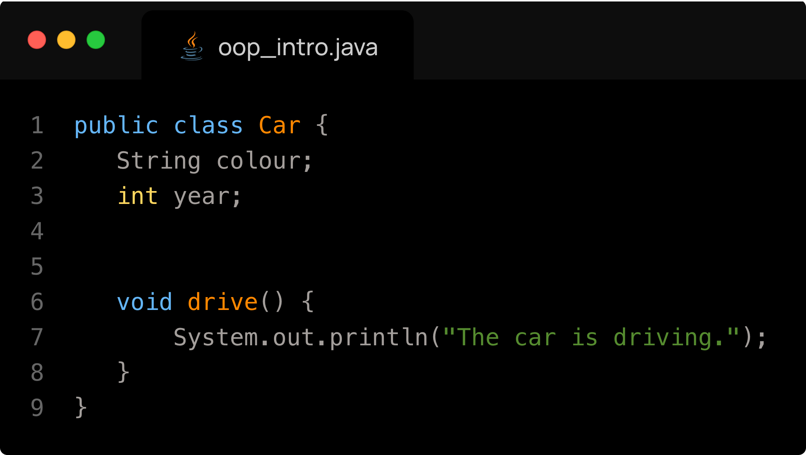 -
An object is a specific instance of a class. It represents a specific example created from a class blueprint with its own unique attributes. Two instances of the same class will have the same behaviour but will have different parameters. If a class is a car design, then an object of that class can be a Red 2005 Toyota Camry.
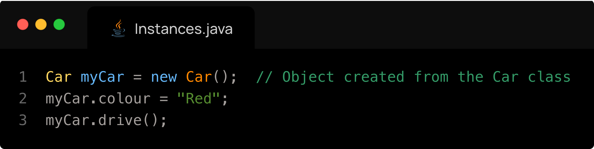
UML Representation
Classes are commonly represented using Unified Modeling Language (UML) structure. A simple example of UML is below:
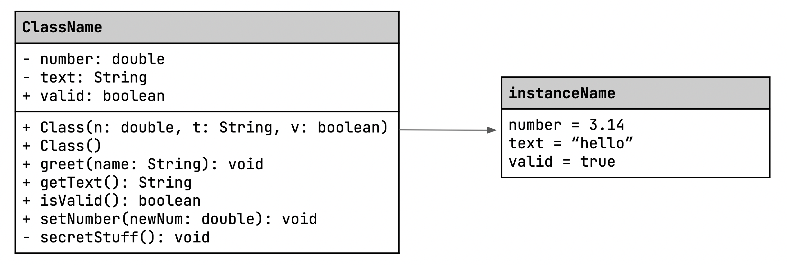First we see that a class has three sections:
- The name of the class, in our case ClassName (make sure it follows the naming conventions for classes - it must begin with a capital letter)
- The attributes of the class, their respective data type and their access symbol
- Done in the format: [access symbol] [variable name]: [variable type]
- The methods of the class, their parameters (if applicable) and their return types.
- Done in the format: [access symbol] [method name]([parameters and respective types]): [output type (or void if none)]
- Constructor format: [access symbol] [class Name]([parameters and respective types])
Next we see that an instance of a class has 2 sections:
- The name of the instance, following all naming conventions
- The attributes of the method
- [variable name] = [value of variable]
Note: one class can have multiple instances.
The symbols before a method or attribute in a class are bellow ([UMLDiagrams.org] Visibility in UML):
| Symbol | Meaning | Access Level | Example |
|---|---|---|---|
| + | Public | Accessible from anywhere | + drive(): void |
| - | Private | Accessible only inside the class | - mileage : int |
| # | Protected | Accessible inside the class and its subclasses | # model : String |
| ~ | Package (default) | Accessible within the same package | ~ speed : int |
Note that I will only be using '+' and '-' (public and private) in my diagrams. It is good practice to have all attributes set to private, and have other classes access the values of these attributes using a getter method and set the values of these attributes using a setter method.
Here is a UML example of creating three instances of a class Car.
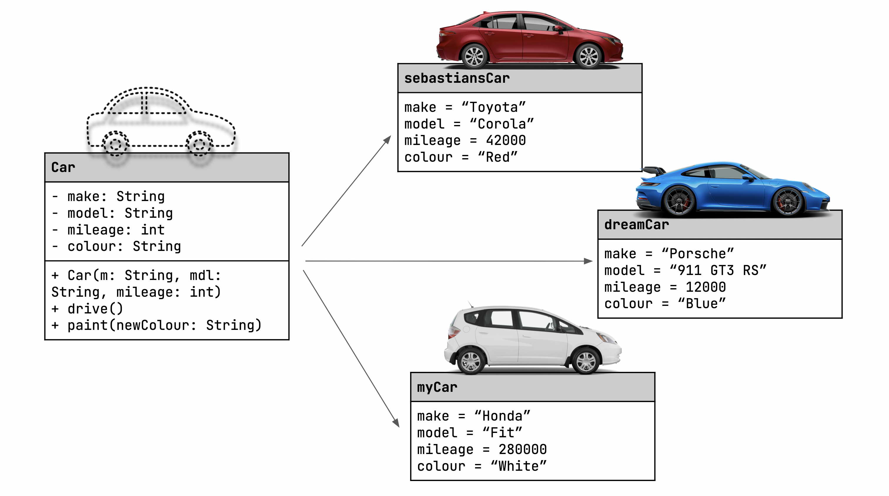The equivalent of the UML above but in code would be:
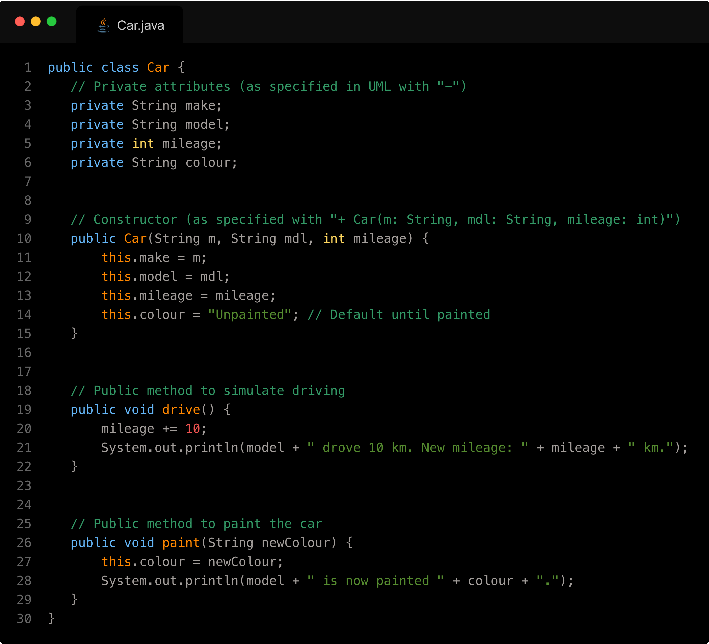In another class we would have:
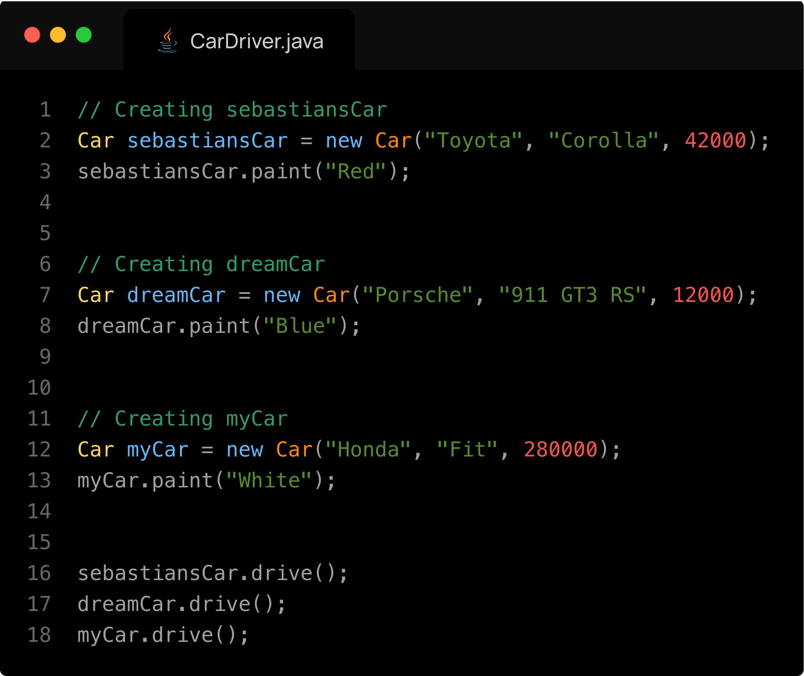Inheritance Introduction
Inheritance is a key concept in Object-Oriented Programming (OOP) that allows a class to inherit properties and methods from another class.
Bellow are some definitions of common inheritance terminologies:
Superclass: A superclass is a general class (like Animal) that contains common attributes and methods. It is the class being inherited from (the parent or base class).
Subclass: A subclass is a more specific class (like Dog) that inherits the properties of the superclass using the extends keyword. It is the class that inherits from the superclass, so it is the child.
Extends: The Java keyword used to declare that one class inherits from another.
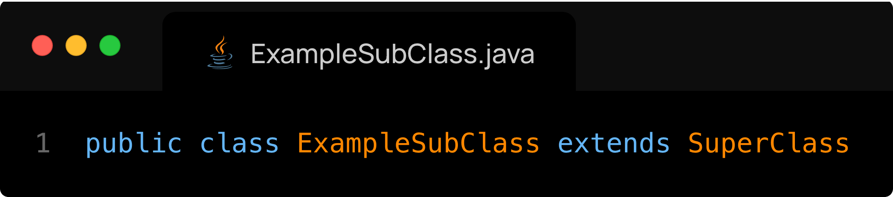Here, the class ExampleSubClass is a superclass of SuperClass.
[W3 Schools] Java Inheritance (Subclass and Superclass)
Inheritance Example
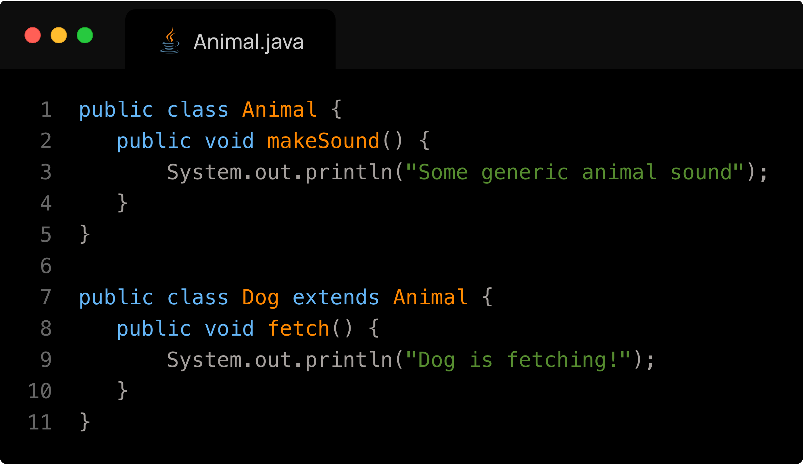In this example, if we created an instance of Animal, we could run only the method makeSound. However, if we created an instance of Dog, we could run both makeSound and fetch because the Dog inherits the methods of Animal.
Is-a and Has-a relationship
What is the difference between "IS -A" relationship and "HAS-A" relationship in Java? - Stack Overflow- Going from a superclass to a subclass we have an “has a” relationship.
- Going from a subclass to a superclass we have an “is a” relationship.
- In the case of a Car, SportsCar situation, Car is a parent (superclass) and SportsCar is a child (sub class). A sports car is a type of car, but with more specific features. Car has a (or you could say contains) SportsCar.
Visual Example
In the scheme below, I create classes to categorize vertebrates:
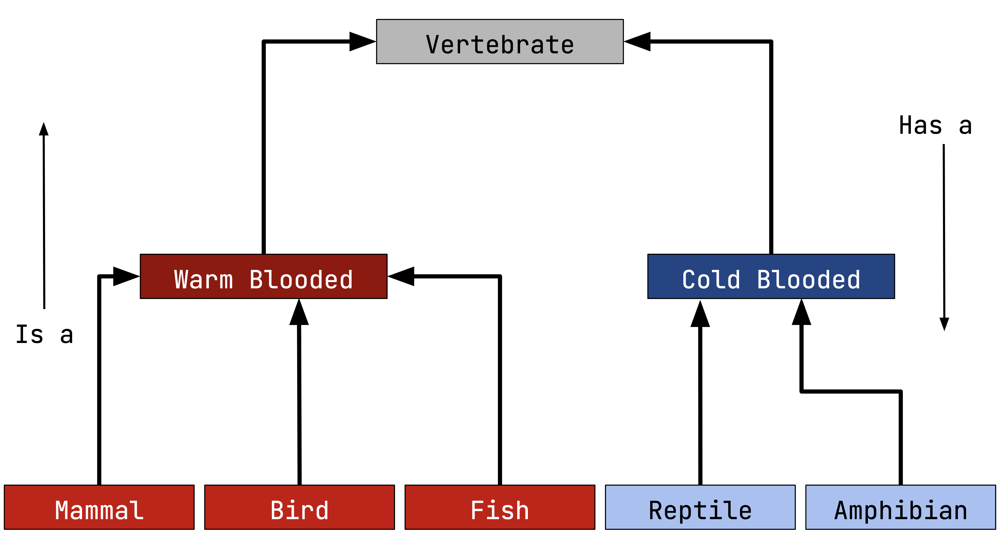- Class Vertebrate is the highest level class, meaning it contains the most general information.
-
Warm Blooded animals extend Vertebrate because Warm Blooded animals are a (is a) type of vertebrates. Warm Blooded animals inherit properties of Vertebrates.
- Mammal, Bird and Fish extend Warm Blooded animals because they are a (is a) type of Warm Blooded animals. They all inherit properties of Warm Blooded animals.
-
Cold Blooded animals extend Vertebrate because Cold Blooded animals are a (is a) type of vertebrates. Cold Blooded animals inherit properties of Vertebrates.
- Reptile and Amphibian extend Cold Blooded animals because they are a (is a) type of Warm Blooded animals. They all inherit properties of Cold Blooded animals.
super() keyword
The super keyword is used in a subclass to refer to its immediate superclass.
It's commonly used for calling the superclass constructor:
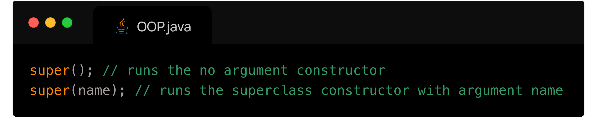It can also be used to access a superclass method or field:
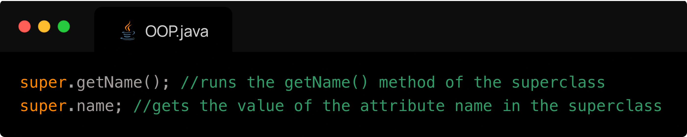Constructors
In Java, constructors are not inherited, but when a subclass is created, it must call a constructor of its superclass, either automatically or using super().
- The first line of a subclass constructor is often super() to call the parent's constructor (called an explicit constructor).
- If you don't write super(), Java will insert super() automatically (implicit constructors). However, this only happens if the superclass has a no argument constructor, otherwise it will crash. java - What is the difference between implicit constructor and explicit constructor? - Stack Overflow
- You can use super(argument) to call a specific constructor in the superclass.
Inheritance Code Example
I will now create a very similar scenario to the one above (Vertebrates, Warm Blooded, Cold Blooded, …) with the removal of Fish and Amphibian, for the sake of simplicity. We will first model the program in Java:
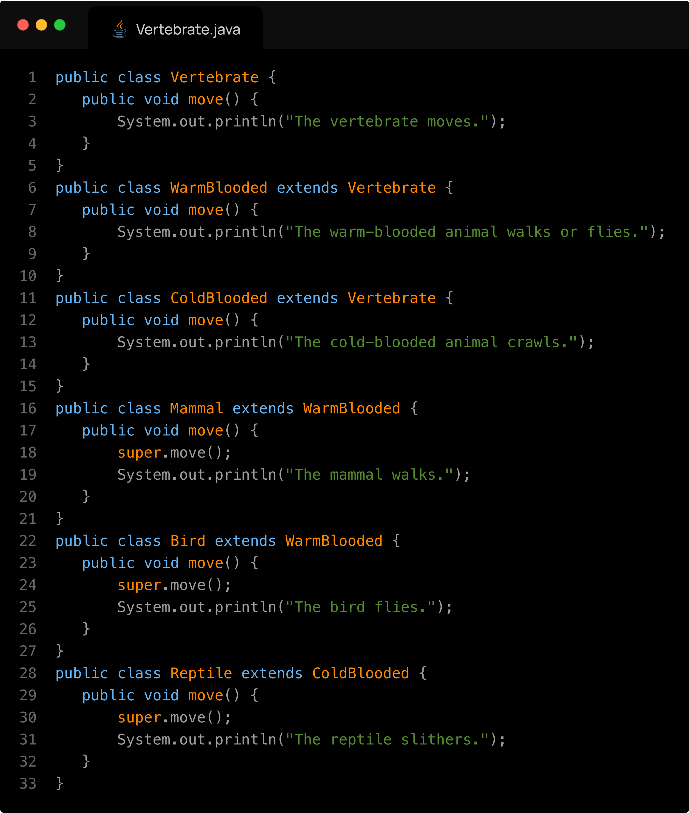Now I will run in a separate class Main several commands, explain what they will output and why.
| Code (in Main.java) | Output | Explanation |
|---|---|---|
| Vertebrate v = new Vertebrate(); v.move(); |
The vertebrate moves. | Calls the base class method directly. |
| WarmBlooded w = new WarmBlooded(); w.move(); |
The warm-blooded animal walks or flies. | Uses overridden method in WarmBlooded. |
| Bird b = new Bird(); b.move(); |
The warm-blooded animal walks or flies. The bird flies. | Bird overrides move() and calls super.move() to include WarmBlooded’s version. |
| Vertebrate v2 = new Bird(); v2.move(); |
The warm-blooded animal walks or flies. The bird flies. | Polymorphism: although the reference type is Vertebrate, the actual object’s method in Bird is called. |
| ColdBlooded c = new ColdBlooded(); c.move(); |
The cold-blooded animal crawls. | Uses overridden method in ColdBlooded. |
| Reptile r = new Reptile(); r.move(); |
The cold-blooded animal crawls. The reptile slithers. | Reptile calls super.move() to include the ColdBlooded behavior. |
| Vertebrate v3 = new Mammal(); v3.move(); |
The warm-blooded animal walks or flies. The mammal walks. | Shows polymorphism + inheritance through super. |
| Bird b2 = (Bird) new Vertebrate(); b2.move(); |
Runtime Error: ClassCastException | Cannot cast a base class object to a derived type. Java throws an error during execution. |
| ((WarmBlooded) new Mammal()).move(); | The warm-blooded animal walks or flies. The mammal walks. | Valid cast up the hierarchy. move() from Mammal is still called because the actual object is Mammal. |
| Mammal m = (Mammal) new WarmBlooded(); m.move(); |
Runtime Error: ClassCastException | Trying to downcast to Mammal, but object is actually only a WarmBlooded. This is not allowed unless it was originally a Mammal. |
Mistakes to Avoid
Forgetting you can only call methods found or inherited by the reference type
If you have a variable of type SuperClass (let's say Vertebrate) but is instantiated using the constructor of SubClass (let's say Bird), you can't simply run a method found only in the superclass. To do this you would need to cast the variable to the type SubClass (Bird), and then run the method. You can only call methods declared in the reference type (Vertebrate), even if the object is a Bird. You'd need to cast:
Incorrect Casting Leading to ClassCastException
You cannot cast a superclass to a subclass. This code would compile, but it would crash at runtime.
Forgetting a private method cannot be inherited
A subclass will not inherit a private method from a superclass. If you attempt to call the method from the subclass, you will get a compile error.